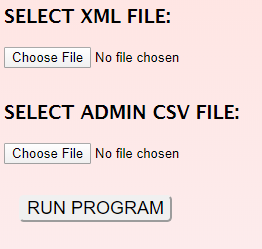

TABLE OF CONTENTS
DISCLAIMER
The LIL Helper is not associated with Magento or Freestyle Solutions in any way.
The LIL Helper is provided as-is, with no warranty.
ABOUT THE LIL HELPER:
A BETTER WAY TO IMPORT
The LIL HELPER takes the heartache and pain out of importing Magento orders into MOM.
For anyone who uses Bizsync to import orders from Magento to MOM, the LIL Helper makes things easier by taking out the guess-work.
Every MOM import has its potential dangers: shipping methods that need correction, special orders, high-risk orders, it's a lot to look for. The LIL HELPER finds these problems, and brings them to your attention. The means less time looking for potential problems in an order, and more time fixing actual problems.
The program takes the Bizsync file used in MOM/Magento import, and parses it into a readable list of potential problems with orders.
The LIL HELPER can also take a CSV order file from Magento's Extended Orders page to look for more issues.
Using the LIL HELPER is as easy as selecting two files from your computer.
FEATURES
The LIL HELPER can detect the following issues in a MOM import:
- If a customer has overpaid for expedited shipping.
- For example, if they paid for three-day shipping, but live inside your company's two-day shipping zone.
- A UPS shipment headed for a PO Box.
- A UPS Residential shipment headed to a commercial address.
- A domestic UPS shipment headed outside the contiguous US.
- For example, an order headed to Hawaii, Alaska, or Puerto Rico.
- International orders.
- An order that has a labor code or special order code, specific to your company.
- Orders where the first digit of a phone number is '1'.
- Multiple orders from the same customer, which may be combined.
When you combine a Magento order file with your MOM import file, you can look for these additional issues:
- High-value orders requiring a signature.
- High-value orders requiring insurance.
- Orders with a high-fraud risk.
- False positives on high-fraud risk orders, due to being placed by a CSR.
The LIL HELPER has additional features to make importing easier:
- Auto-generated MOM Chat notifications for starting and ending imports.
- Click-to-copy for common phrases, like your company's Alternate search ID
- An insurance calculator, for quickly finding the insurance amount on an order, without needing to leave the program.
The LIL HELPER is built for security: all information specific to your company, like IP addresses and labor codes, is stored locally, not on a server. Take control of your information!
The following features are IN-DEVELOPMENT for MOM'S LIL HELPER:
- Detect orders where items have special packing requirements.
SETTING UP THE LIL HELPER
The LIL Helper requires information specific to your company in order to work.
This information is securely stored in your browser's local storage, it is not stored on a server.
Once this information is entered by the user, it can be stored indefinitely, and updated if needed.
User info can be added, removed, or modified in the SETTINGS section
- To access user settings, load the LIL Helper,
and click the SHOW SETTINGS button in the top-right corner of the screen.

- When the SHOW SETTINGS button is clicked, it will reveal the setting section in the lower half of the screen.
- The Company Name will be displayed when you submit your MOM Chat messages about starting/ending the import.
- The MOM Folder Validation String is a set of characters always found at the beginning of the Bizsync file. The LIL Helper checks for this sequence of characters to make reasonably sure that you're using the correct file.
- The Magento Admin Folder Validation String is the same thing, but for the CSV file output from Magento.
- The Alternate ID is a code your company might use to quickly look up the most-recent orders brought into MOM.
- Your Company IP Address is used to check for false-positives from Magento's fraud detection. When you process a customer's credit card, Magento's fraud detection will see a payment made with the customer's card, hundreds or thousands of miles away from the customer's billing address. Magento will usually assume that the card has been stolen, and give a high fraud risk to the order. The LIL Helper will check the IP address of an order against your company's IP address, and use that to detect a false positive.
- The Start and End times are used to narrow down the number of orders displayed, so the LIL Helper will only show orders relevant to your import. This is especially important if you are only using the CSV order file from Magento.
- Sometimes, an order placed by customer service will have special instructions associated with it.
The special order code
is sometimes used to flag orders with special instructions.
NOTE: The following items may require special attention to set up.
- Some orders require special packing. For example, orders that contain one large item, and several small items, might require two boxes instead of one. Make a list of all items in your MOM inventory that might require special packing. Separate items with commas and no spaces.
- The next three fields are used to help detect shipping problems with orders. For each of these
fields, use official state abbreviations,
and separate values by commas with no spaces.
For this example, we have assumed that the shipping warehouse is located in Colorado.
- The One-Day Zone includes all US states where you could deliver UPS Ground packages within one business day.
- Next, list all states in the Two-Day Zone for your company.
- Lastly, list all remaining states in the Contiguous (Lower-48) states US.
If an order is shipping within the US, but outside the Lower 48 states (like Alaska or Hawaii), the LIL Helper will automatically recognize that.
All orders not shipping to a recognized US state or territory will be automatically classified as an international order.
If you notice any strange shipping notifications while using the LIL Helper, it may be due to a mistake in these fields.
- The High-Value Order Threshold is the dollar amount at which your company deems an order to be high-value. These orders may require a signature and/or insurance, and will probably need to be considered carefully. Your company may require these orders have matching billing/shipping addresses, or other special considerations.
- The Fraud Risk Threshold is the minimum Magento fraud risk score that your company considers suspicious. These orders may require special care. The LIL Helper will help detect false-positives caused by customer service placing the order.
These values are stored in local storage in your browser, they are not stored on a server.
SAVING/LOADING YOUR SETTINGS
In some cases, it may be useful for co-workers to share settings, rather than have everyone go through the setup process separately.
The LIL Helper makes it easy to copy your user settings, or load in someone else's
To export your settings, click the button labeled Copy Settings to Clipboard in the bottom-right of the settings panel.
Then, open a new email or text document, and hit Control + v to paste the settings. It will look something like this:
Do not be alarmed, it's supposed to look like that. You now have the raw LIL Helper settings that someone else can load into their program.
To load someone else's user settings into your computer, click the LOAD SETTINGS button in the bottom-left of the settings panel.
After clicking LOAD SETTINGS, you will receive a prompt, asking you to paste a 'settings string'.
Paste the raw settings info from earlier, and click OK
The settings will be automatically loaded into the LIL Helper, and saved into the browser's local storage.
USING THE LIL HELPER: A STEP-BY-STEP GUIDE
- Load the Bizsync Orders.xml file
This file will always be in the same folder in your company's system.
- Load the Magento Orders.csv file
- Click the RUN PROGRAM button. 
- Double-check that the import XML file is ready.
After you click RUN PROGRAM, you will be warned to check that the import file is ready.
Never assume that just because the clock says it's time for your import, that the import file is ready. The Bizsync Orders.xml file may arrive early, or late. Don't make the mistake of importing orders that were already imported, that means nothing but a lot of needless cleanup.
As a safeguard against this, the LIL HELPER will warn you before parsing the files to double-check that your import file is ready.
- If the import XML file is ready, click 'OK'
The submitted files will be parsed and merged into a single collection of data.
The program will terminate under the following conditions:
- If no files have been selected.
- If the LIL HELPER does not recognize the file.
- If either file is in the incorrect place, for example, the CSV file is loaded in the area meant for the XML file.
If only one file is used, and is in the correct place, the program will still work, but not as much information will be processed.
- Using only the import XML file will provide information about shipping, special labor codes, special packaging, and phone numbers.
- Using only the Magento CSV file will provide information about the value of an order, signature/insurance requirements, fraud risk, and fraud risk false-positives.
- Using either spreadsheet provides information on multiple orders by one customer within the same import.
To create the Magento order file, go into Magento, and click Sales --> Extended Orders
Select only orders from today, at the top of the Purchased On column for the order table.
BY ODIN'S BEARD, make sure you select a date before exporting! If you do not have dates selected, Magento will attempt to make a CSV file with all company's orders, which will jam the system.
On the right-hand side of the page, click the Export button.

This will download a CSV file to your specified download folder.
The CSV file is now ready to load.
You will receive an alert, giving the number of orders the LIL HELPER found. After dismissing the alert, the LIL HELPER will display a table of parsed information.
After a moment, the program will automatically scroll to the bottom of the table. You should start at the bottom, and work your way up through the orders.
There will occasionally be a small discrepancy between the number of orders processed by the LIL HELPER and the number of orders in your MOM import.
DEVELOPMENT NOTES
- LIL stands for Local Intermediary Logic.
- The LIL Helper was programmed using Vanilla JS.